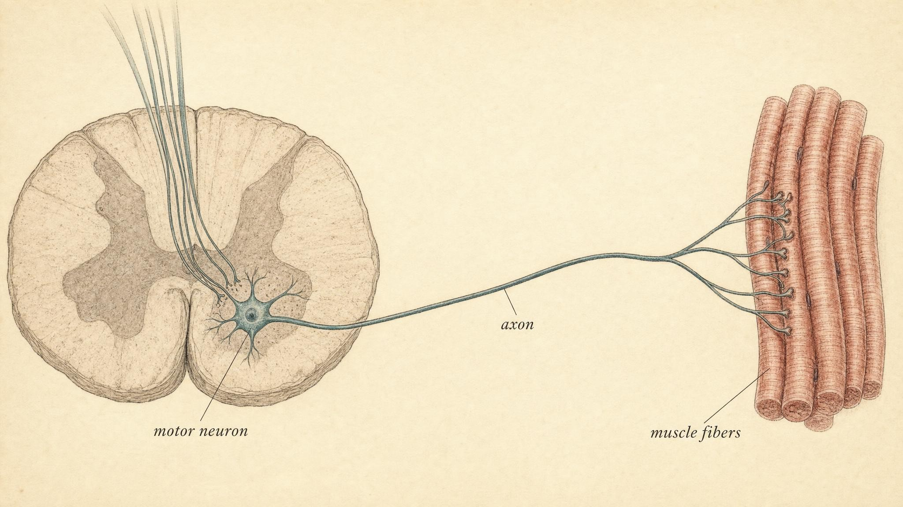
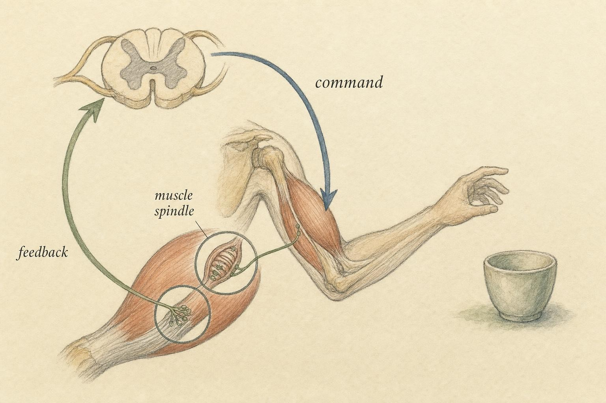

From Intention to Movement
How a decision becomes a contracting muscle, and why it never happens blind.
Bianca is a violinist, or she is trying to become one again. She played as a teenager, quit for a decade, and picked the instrument back up at twenty nine because she missed the feeling of a difficult passage finally clicking into place under her fingers. Most evenings she works through the same eight bars of a fast run, and most evenings, for the first several weeks, her bow arm betrayed her. It would judder where it should glide, land too hard where it should land soft, and occasionally, on the fastest notes, simply refuse to keep up. She assumed the problem was her fingers. It was not. The fingers were only the last stop on a very long line.
Consider what actually has to happen for Bianca to draw the bow across the string with the right speed and the right pressure at the right instant. A plan forms in her motor cortex, shaped by weeks of repetition and the memory of how the passage is supposed to feel. That plan becomes a command, and the command travels down her spinal cord to a specific population of cells that control the small muscles of her forearm, wrist, and fingers. Those cells fire, in a particular order, at a particular rate. Their signals cross a specialized junction into muscle, and the muscle fibers on the other side of that junction shorten by a precise, coordinated amount. And the entire time this is happening, in a fraction of a second, sensors buried inside her muscles and tendons are reporting back exactly how far each part of her arm has moved, so that if the bow starts to drift off course, a correction is already underway before Bianca is even aware anything went wrong.
This is the outbound half of the nervous system, the efferent pathway we sketched in an earlier chapter, now fully developed. Earlier chapters in this course followed signals inward, from the world into the spinal cord and brain. This chapter follows them back out, to their most visible and most physical consequence: a limb that moves the way you intended it to move, or does not. The goal is an honest working model of that outbound relay, built from four linked ideas. First, that every command in the nervous system, no matter where it originates, must pass through a single final cell before it can reach muscle. Second, that the handoff from that cell to the muscle happens at a remarkable, highly reliable synapse built around a single chemical messenger. Third, that force is not graded by making individual events bigger, but by recruiting more units and firing them faster, the same frequency principle you have already met at the level of a single cell, now scaled up to the level of a whole muscle. And fourth, that none of this ever runs blind: movement is shadowed at every instant by feedback from the body itself, and by reflexes fast enough to correct an error before the brain has finished registering that one occurred. By the end of the chapter you should be able to trace an intention like Bianca's, from the decision to move a bow to the shortening of a muscle fiber and back again through the feedback that keeps the motion smooth, and you should understand, in outline, why months of practice were able to change what her arm could do.
The final common pathway
Every voluntary movement anyone has ever made, and every reflexive twitch besides, has passed through the same narrow gate. The physiologist Charles Sherrington gave that gate a name early in the twentieth century that has never needed replacing: the final common pathway. It refers to a single kind of cell, the alpha motor neuron, whose body sits in the ventral horn of the spinal cord, or in a matching nucleus in the brainstem for the muscles of the head and face, and whose axon runs, unbroken, all the way out to the muscle fibers it controls.
The phrase rewards a moment of thought before we move past it. Descending commands arrive at the spinal cord from many sources at once: the motor cortex, several brainstem centers, and a set of local spinal circuits, all shaped indirectly by the basal ganglia and the cerebellum, which help plan and time the movement without themselves connecting directly to muscle. None of these upstream regions can talk to muscle on its own. Every one of them, without exception, has to route its influence through the alpha motor neuron. It is the last neural link in a very long chain, and it is common to every source feeding into that chain, which is exactly what the name says. Whatever the cortex intends, whatever a spinal reflex demands, whatever a brainstem circuit is adjusting on the fly, the vote is tallied on the membrane of that one cell. If the vote reaches threshold, the cell fires, and if it fires, the muscle fibers under its command will contract. There is no appeal beyond that point, and no shortcut around it.
This convergence is what makes the motor neuron such a useful anchor for a working model of movement. Upstream, the complexity is genuinely enormous, involving millions of cells across several brain regions negotiating a plan. Downstream of the motor neuron, that complexity collapses into a single, easily interpreted output: a train of action potentials traveling down one axon. Recall the all or nothing rule for a single spike, introduced earlier in this course. The motor neuron obeys that rule exactly. It does not send a large signal for a heavy lift and a small one for a light touch. Every spike it produces is identical to every other spike it produces. As the chapter unfolds, you will see that the entire richness of graded muscular force, from the gentlest touch to a maximal effort, is built downstream from a stream of these identical, all or nothing events. That should already tell you something important: how many motor neurons are active, and how often each one fires, will matter far more than how large any single spike happens to be, because size is simply not a variable this system has to work with.

It helps to be precise about what a motor neuron actually controls, because the phrase final common pathway is sometimes read as though a single motor neuron commands an entire muscle. It does not. A muscle like the biceps contains many hundreds of individual motor neurons, each one responsible for its own private slice of the muscle's fibers. The final common pathway is the principle that governs each of those slices individually. Every one of them is the sole neural gateway to the fibers it owns, and every one of them is where all upstream influence on those particular fibers has to converge. We will return to what that private slice is called, and why its size varies so much from one muscle to another, once the chemistry of the handoff to muscle is in place.
It is also worth flagging, briefly and without wandering into territory beyond this course, that the spinal cord houses a second, smaller class of motor neuron alongside the alpha type described above. These are the gamma motor neurons, and rather than driving the bulk of a muscle's contractile fibers, they adjust the sensitivity of the stretch sensors embedded inside the muscle, the same sensors this chapter will return to once feedback comes into focus. For now, the detail worth keeping is simple: the term motor neuron is not a single monolithic category. The alpha type is the one that produces force, and it is the one this chapter follows all the way to muscle. The gamma type quietly tunes how well the system can feel what it is doing, a job that becomes relevant once we reach proprioception later in the chapter.
Where nerve meets muscle
The axon has arrived at the muscle. It cannot simply plug into a muscle fiber and inject electrical current directly, because nerve and muscle are separate cells with separate membranes, and the signal has to jump the gap between them. That gap, together with the specialized machinery built around it, is the neuromuscular junction (NMJ), and despite its unassuming name it is nothing less than a synapse. Everything you have already learned about chemical transmission between neurons applies here, tuned to one very specific and very consequential job. Sanes and Lichtman (1999) called the NMJ the best studied of all synapses, and the description has held up well since, for good reason: it is large by cellular standards, it is physically accessible to researchers, and it behaves with a dependability that makes it both an excellent teaching model and a favorite subject of decades of experiments.
The chemical messenger at this junction is acetylcholine (ACh), a molecule that shows up in several roles across the nervous system and here is doing one of its signature jobs. The cascade from arriving spike to muscle contraction is worth walking through slowly, because it is the exact moment at which intention finally becomes mechanical force (Rodríguez Cruz et al., 2020).
The relay, step by step
First, the action potential travels down the motor axon and reaches the nerve terminal, the specialized swelling where the axon meets the muscle fiber. Its arrival depolarizes the terminal membrane and opens voltage gated calcium channels sitting in that membrane. Calcium ions rush into the terminal, the near universal trigger for transmitter release throughout the nervous system, and this influx causes small vesicles loaded with acetylcholine to fuse with the terminal membrane and dump their contents into the narrow space between nerve and muscle, called the synaptic cleft.
Acetylcholine diffuses across that cleft in a fraction of a millisecond and binds a class of receptors called nicotinic acetylcholine receptors, clustered densely on the muscle fiber's membrane directly opposite the release sites. These receptors are ligand gated ion channels, meaning the binding of acetylcholine itself physically opens them, allowing positive ions to flow into the muscle fiber and depolarize its membrane. This local depolarization has its own name, the endplate potential, after the specialized patch of muscle membrane, called the motor endplate, where it occurs.
Here the NMJ differs from a typical synapse inside the brain in a way that matters for the whole rest of this chapter. At a central synapse, one incoming spike usually produces only a small dent in the receiving neuron's membrane, and it takes many such inputs summing together, often from many different neurons, to push that membrane to threshold. The neuromuscular junction is not built for that kind of deliberation. It is built for reliability. The endplate potential it produces is enormous, far larger than what is strictly needed to trigger a response. This built in safety margin means that, under healthy conditions, one motor neuron spike reliably produces one muscle fiber action potential, essentially every single time. The junction does not tally competing votes the way a central synapse does. It faithfully relays. That muscle fiber action potential then sweeps rapidly along the length of the fiber and, through a further chain of internal events involving calcium release inside the muscle cell, causes the fiber to shorten.
Notice the echo, at a new level of organization, of the same all or nothing principle introduced for the neuron. The muscle fiber obeys it too. Once its membrane crosses threshold, it produces a complete action potential and a complete, brief contraction called a twitch. There is no such thing as a half twitch. The single fiber, like the single spike that triggered it, is a digital, on or off unit. And this raises the same puzzle a second time, now one level higher: if a fiber's response is strictly all or nothing, how does a violinist produce a feather light pianissimo bow stroke with a whisper of force, and a full fortissimo chord with a great deal more? As before, the answer is not hidden in the size of any single event. It is hidden in how many such events are combined, and how quickly.
Two further design features of the neuromuscular junction are worth naming, because they explain why the relay is not just reliable but also fast and self resetting. First, the postsynaptic membrane on the muscle side is not flat. It is thrown into deep folds directly beneath each release site, and those folds dramatically increase the surface area available to pack in nicotinic receptors, which is part of how the endplate potential manages to be so oversized relative to what threshold actually requires. Second, once acetylcholine has done its job and opened enough receptors, it does not simply linger in the cleft. An enzyme called acetylcholinesterase, stationed right at the junction, rapidly breaks the transmitter down within milliseconds of its release. This matters enormously for control. If acetylcholine stayed in the cleft indefinitely, the muscle fiber would remain depolarized and could not reset in time to respond cleanly to the next incoming spike. Fast clearance is what allows a motor neuron to fire dozens of times each second and have every single spike produce its own distinct, countable twitch downstream, which is the entire premise behind rate coding later in this chapter.
That example is worth pausing on, because it marks a boundary this course takes seriously. Bianca, curious after a rehearsal where her hand tired unusually fast, found an online quiz claiming to screen for myasthenia gravis from a list of symptoms and nearly filled it out. Muscle fatigue with repeated use has many possible explanations, most of them ordinary, and sorting a real neuromuscular disorder from simple overuse, poor conditioning, or a hundred other causes is not something a symptom checklist, or this chapter, is equipped to do. Understanding how the safety factor at the NMJ works is genuinely useful. It tells you why certain diseases produce the specific pattern of weakness they do, and it will make you a more informed person the next time such a diagnosis comes up in your life. It does not make you qualified to apply that understanding to a specific case, including your own.
The motor unit: the true quantum of movement
A motor neuron does not, in practice, control a single isolated muscle fiber. Its axon branches repeatedly as it enters the muscle, and each branch terminates on a different fiber. One motor neuron, together with every muscle fiber it innervates through those branches, forms what is called a motor unit (Heckman & Enoka, 2012). When that motor neuron fires a single spike, every fiber belonging to its unit twitches together, essentially as one. The motor unit, not the individual fiber and not the individual spike, is therefore the smallest element of movement the nervous system can actually command as a discrete choice. You cannot fire half a motor unit any more than you can fire half of a single spike.
Motor units come in a wide range of sizes, and the range is genuinely enormous across the body. In a muscle built for fine, precise movement, such as the small muscles that aim the eyes, or the muscles Bianca relies on to place her fingers exactly on a string, a single motor neuron might command only a handful of fibers, perhaps a dozen or two. That arrangement gives the nervous system exquisitely fine grained control, because turning on or off any one such unit changes the total force only slightly. In a large muscle built for sustained postural work, such as the calf muscles that keep a standing body upright, a single motor neuron may command many hundreds, or even close to a thousand, fibers, trading away precision for raw power and efficiency. The size of a motor unit sets the grain of control available in that particular muscle: small units allow force to be adjusted in tiny steps, while large units add a substantial lump of force all at once.
Motor units also differ from each other in more than size. Some are small, contract relatively slowly, and are highly resistant to fatigue, ideal for the low level, sustained work of holding posture for hours without tiring. Others are large, contract quickly, produce a great deal of force, and fatigue rapidly, held in reserve for a maximal effort such as a sprint or a heavy lift. This diversity is not incidental. It is the raw material the nervous system draws on to grade force intelligently rather than crudely.
This variation traces back to the muscle fibers themselves, which come in broad families with distinct metabolic personalities. Type I fibers, sometimes called slow oxidative fibers, rely heavily on aerobic metabolism, contract at a modest speed, and can sustain low level effort for a very long time without tiring, which is exactly why a motor unit built from them makes such a good match for postural muscles. Type II fibers, sometimes called fast fibers, lean more heavily on rapid, less efficient energy pathways, contract quickly, generate more force per fiber, and fatigue sooner. A motor unit's overall personality, small and tireless or large and powerful, largely reflects which fiber type its motor neuron happens to be paired with. The nervous system did not invent two separate control strategies from scratch. It simply learned to recruit an existing menu of fiber types in a sensible order, saving the fast, hungry fibers for the moments that genuinely need them.
Grading force: recruitment and rate
Here the chapter arrives at its central mechanical insight, and it is a direct extension of the frequency coding you met earlier in this course applied to a single neuron. The nervous system has exactly two levers available for grading the force a muscle produces, and only two (Enoka & Duchateau, 2017).
Recruitment means turning on more motor units. As the demand for force increases, additional units are switched on to help carry the load. Crucially, they are not switched on in a random order. They are recruited in a remarkably orderly sequence, running from the smallest units to the largest, a pattern known as the size principle. The small, fatigue resistant units come online first, for gentle tasks that need only a little force. The large, powerful, fast fatiguing units are held in reserve and recruited last, only when near maximal effort is required. This ordering is a strikingly economical piece of biological design. It means fine control is available exactly where it is needed most, at low forces, because small units each add only a small increment, while raw power is still available on demand when the moment calls for it.
Rate coding means firing each already recruited unit faster. A single twitch is brief. The fiber begins relaxing again before the next command has a chance to arrive. But if the motor neuron fires a second spike before that relaxation is complete, the two twitches begin to overlap and add together, a phenomenon called summation. Fire fast enough, and the individual twitches fuse into a smooth, sustained, and substantially stronger contraction called tetanus. In this way, the same all or nothing units produce noticeably more force simply by being driven at a higher spike frequency. This is the same frequency coding principle from earlier in the course, reappearing now at the level of whole muscle force output: intensity is encoded not by bigger individual events, but by faster ones.
Across most of a muscle's working range, these two levers operate together. The nervous system recruits additional units while also speeding up the units already firing. At higher force levels, once most or all available units have already been recruited, rate coding becomes the dominant remaining means of adding still more force, and this is especially prominent during fast, forceful contractions (Enoka & Duchateau, 2017). Recruitment and rate coding are not alternative strategies the nervous system chooses between. They are a coordinated pair, working in concert throughout a contraction.
One further subtlety, captured elegantly by a computational model built by Fuglevand and colleagues (1993), explains why force does not appear to climb in even, regular steps as you exert more effort. Low threshold motor units are far more numerous than high threshold units in most muscles, and each newly recruited unit adds proportionally less to the running total as overall force climbs, simply because it is joining a larger and larger pool of units already contributing. The practical result is a nonlinear relationship between recruitment order and force output, in which small forces near the bottom of the range are finely divisible into many small steps, and large forces near the top are built in coarser lumps. Put plainly, the nervous system has its highest resolution exactly where it is most needed, at the gentle end of the range, where a light touch, or a soft bow stroke, must not be crushed by an accidental excess of force.
The force exerted by a muscle during a voluntary contraction depends on the number of motor units that are activated and the rates at which the active motor neurons discharge action potentials.
Enoka & Duchateau (2017)
Movement is never open loop
So far the chapter has built a one way street: a command goes in, a force comes out. If that were the whole story, movement would be catastrophically clumsy. Imagine Bianca drawing her bow with her eyes closed and, more importantly, with no sense whatsoever of where her arm actually was in space. She would have to guess the entire trajectory in advance, fire off exactly the right pattern of commands, and simply hope. Any error at all, a string that offered slightly more resistance than expected, a small slip of the fingers, a muscle that had tired a little more than she realized, would go completely uncorrected. She would overshoot, wobble, and miss the note.
Real movement is not built this way. It is a closed loop: the nervous system continuously monitors what the body is actually doing and adjusts on the fly, in real time, while the movement is still underway. The sense that makes this possible is proprioception, the sense of body position and movement introduced earlier in this course. Buried inside your muscles are specialized stretch sensors called muscle spindles. Embedded within your tendons are tension sensors called Golgi tendon organs. Together these two sensor types report, moment by moment, how long each muscle currently is, how quickly that length is changing, and how much force it is bearing. This stream of information flows back into the spinal cord and up toward the cerebellum, giving the motor system a live, continuously updated readout of the very limb it is trying to control (Bosco & Poppele, 2001).
Proprioception rarely gets the attention that vision or hearing receives, and part of the reason is structural. There is no single dedicated organ for it, nothing shaped like an eye or an ear that you can point to and say, there, that is where this sense lives. Instead it is distributed across thousands of small sensors woven through nearly every muscle, tendon, and joint in the body, each one quietly reporting a tiny slice of the whole picture. Because the sense normally works so well and so invisibly, it tends to be noticed only in its absence. People who lose proprioceptive input to a limb, through certain rare nerve conditions, can retain full strength in the muscles involved and still be unable to control the limb smoothly, because they can no longer feel where it is without looking directly at it. That striking observation, on its own, makes the case for this section better than any amount of description: a working motor system needs the outbound half described earlier in this chapter and this inbound half in equal measure, and neither one is sufficient alone.

Reflexes: correction before thought
The fastest layer of correction in this loop does not involve the brain at all. Recall the spinal reflex arc from an earlier chapter. The clearest example is the stretch reflex. When a muscle is stretched suddenly and unexpectedly, its spindles fire rapidly, and the sensory axons carrying that signal run directly into the spinal cord and synapse, often with remarkably few intervening connections, onto the very motor neurons that drive contraction of that same muscle. The muscle is commanded to contract and resist the stretch, and the whole exchange happens within a few dozen milliseconds, long before any signal could travel all the way up to the cortex, be processed, and travel back down again. This is precisely the loop a clinician is testing when they tap below your kneecap with a small reflex hammer. The sudden stretch of the tendon triggers the reflex, and the lower leg kicks forward without any conscious involvement whatsoever.
In everyday movement these reflexes are not party tricks or curiosities. They function as an automatic gain control that keeps posture and grip stable without requiring constant conscious attention. Picture Bianca holding her violin under her chin for a long rehearsal. If her arm begins to sag with fatigue, the stretch reflex in the muscles supporting the instrument catches the sag and corrects it before she is even consciously aware anything shifted. The correction happens at the level of the spinal cord first, and only afterward do the slower cortical and cerebellar loops refine what the reflex already began. Movement, in short, is best understood as a layered hierarchy of feedback loops running at different speeds at once: a fast, simple, local reflex nested inside slower, more sophisticated supervisory loops that can plan further ahead and account for more context.
There is a long running and genuinely rich scientific conversation about how much of skilled movement relies on feedback, meaning the system reacting to what has already happened, versus feedforward, meaning the brain predicting an outcome and pre compensating for it before anything has gone wrong at all. Bosco and Poppele (2001) place this debate in useful context, and the mature answer that has emerged is that skilled movement uses both mechanisms together. The brain builds an internal prediction of what a given command ought to produce, and feedback is then used to catch and correct the difference whenever reality departs from that prediction. But the foundational point for the working model in this chapter is simpler, and it is not really up for debate: without feedback of some kind, controlled movement is not possible at all. The widget later in this section is built to let you feel that difference directly, rather than simply read about it.
Upstream: planning, sequencing, and the sculpting power of practice
The spotlight so far has stayed deliberately on the motor neuron and everything downstream of it, because that is where an honest working model needs to be anchored. It is worth lifting our eyes briefly, though, to see what feeds into the final common pathway from above. Descending commands originate largely in the motor cortex and travel down through several major pathways, the most prominent of which is the corticospinal tract. In humans and other primates, some corticospinal fibers make direct connections, called corticomotoneuronal connections, straight onto spinal motor neurons, a relatively direct line running from cortex to the final common pathway. This particular kind of connection is associated with skilled, highly individuated movements, such as the independent control of single fingers that a violinist depends on constantly (Lemon, 2008).
Lemon's (2008) central message, and a welcome corrective, is that we should resist the tempting picture of the brain as a general barking fixed orders at an obedient set of spinal troops. Motor control, he argues, emerges from the entire motor network working together, including the cortex, brainstem, basal ganglia, cerebellum, spinal circuits, and the constant sensory feedback threading through all of them at once. A command is not a fixed script written in advance and simply executed on schedule. It is shaped, moment by moment, by the whole distributed system, including the very periphery it is trying to move. The layered loop picture built in the previous section of this chapter is this same idea, seen from below rather than from above.
Between the initial intention and the final descending command lies the work of planning and sequencing, deciding not merely to move but in what order, with what timing, and with what transitions between individual movements. The basal ganglia and the cerebellum are both deeply involved in assembling smooth, well timed sequences out of individual component movements, and in learning and refining those sequences over repeated attempts. This brings us to the most tangible reason the motor system makes such a natural entry point into the rest of this course: practice physically changes it.
When Bianca practices that same eight bar passage night after night, the circuits producing the movement are not merely being used. They are being reorganized. Roth and Ding (2024), reviewing the cortico basal ganglia circuit specifically in the context of motor learning, describe how a newly acquired motor skill becomes written into the nervous system through long term synaptic plasticity and the growth and pruning of tiny structures on neurons called dendritic spines. The physical hardware of the relevant connections is remodeled as the skill is acquired and gradually refined with repetition. This is the nervous system rewiring itself in the most concrete, observable way available to us. You can watch a clumsy, halting movement become fluent over days or weeks of deliberate practice, and know that specific synapses are being reshaped underneath that visible improvement. It is the clearest possible preview of the chapter still ahead of us on plasticity.
And the process does not stop the moment practice stops for the day. Much of the consolidation of a newly practiced motor skill, the surprising overnight leap in fluency that Bianca has noticed more than once after sleeping on a difficult passage, appears to continue during sleep itself, a topic this course will return to directly in a later chapter. The acting half of the sense, decide, and act arc, it turns out, keeps working on itself quietly even while the body is at rest.
Tracing the whole path: a worked example
Let us close the loop on Bianca's bow stroke, tracing one movement from beginning to end using only the concepts introduced in this chapter.
The intention forms: Bianca wants to play the next note softly, then crescendo into the phrase that follows. The plan is assembled with help from her cerebellum and basal ganglia, drawing on months of practice with this exact passage: draw the bow slowly at first, then gradually add pressure and speed. A command descends the corticospinal tract and, in her spinal cord, converges on the final common pathway, the alpha motor neurons controlling her bow arm and finger muscles. Following the size principle, small motor units are recruited first for the gentle opening of the phrase, and as more force is needed for the crescendo, larger units join in while firing rates climb, grading the force smoothly rather than in noticeable jumps.
Each motor neuron spike, all or nothing, travels out to the neuromuscular junction, where calcium entry triggers acetylcholine release. That acetylcholine opens nicotinic receptors on the muscle fiber, generating an endplate potential so large that it reliably fires a muscle fiber action potential and a resulting twitch. Faster motor neuron firing fuses successive twitches toward tetanus, and the muscle shortens in a controlled, graded way rather than in a single abrupt jerk.
Throughout all of this, muscle spindles and Golgi tendon organs in her forearm and hand report length and tension back to the spinal cord continuously, many times each second. If her finger lands slightly off the intended spot on the string, a fast stretch reflex style correction can begin adjusting within milliseconds, while slower cortical and cerebellar loops fine tune pitch and tone over the following moments. The note rings true, or close enough that her ear and her practiced feedback loops can nudge it the rest of the way. And because she has drawn this same bow stroke hundreds of times already, the circuits that produced it tonight will have quietly rewired themselves, just slightly, to do it a little more reliably tomorrow. That quiet rewiring is the bridge to everything the rest of this course builds on.
Key Takeaways
- The alpha motor neuron is the final common pathway: every descending command, every reflex, and every modulatory influence on a muscle converges on it, and only it reaches the muscle fibers themselves.
- The neuromuscular junction is a specialized, high reliability synapse. An arriving spike triggers calcium entry, acetylcholine release, and an endplate potential so large that one nerve spike faithfully produces one muscle fiber action potential and one twitch.
- At the level of a single fiber, contraction is all or nothing, an echo of the same principle governing a single spike, so force cannot be graded by simply making individual events bigger.
- A motor unit, one motor neuron plus every fiber it controls, is the smallest element of movement the nervous system can actually command. Force is graded by recruiting more units, in order from small to large under the size principle, and by rate coding, firing already active units faster until their twitches fuse toward tetanus.
- Movement is never open loop. Proprioceptive feedback from muscle spindles and Golgi tendon organs continuously reports limb position and force, and spinal reflexes supply near instant corrections nested inside slower, more sophisticated cortical loops.
- Motor control emerges from the whole distributed motor network working together, and practice physically rewires that network at the level of individual synapses, the most tangible and observable example of plasticity in this entire course.
This chapter ended with a promise: that practicing a movement physically remodels the circuits that produce it. The next chapter takes that promise as its subject directly. We turn from how the nervous system works to how it changes, plasticity, the capacity of synapses to strengthen, weaken, form, and disappear with experience. Bianca's slowly improving bow arm was our first concrete glimpse of that process. Next we build the general principles underneath it.
References
Bosco, G., & Poppele, R. E. (2001). Proprioception from a spinocerebellar perspective. Physiological Reviews, 81(2), 539-568. https://doi.org/10.1152/physrev.2001.81.2.539
Enoka, R. M., & Duchateau, J. (2017). Rate coding and the control of muscle force. Cold Spring Harbor Perspectives in Medicine, 7(10), a029702. https://doi.org/10.1101/cshperspect.a029702
Fuglevand, A. J., Winter, D. A., & Patla, A. E. (1993). Models of recruitment and rate coding organization in motor-unit pools. Journal of Neurophysiology, 70(6), 2470-2488. https://doi.org/10.1152/jn.1993.70.6.2470
Heckman, C. J., & Enoka, R. M. (2012). Motor unit. Comprehensive Physiology, 2(4), 2629-2682. https://doi.org/10.1002/cphy.c100087
Lemon, R. N. (2008). Descending pathways in motor control. Annual Review of Neuroscience, 31, 195-218. https://doi.org/10.1146/annurev.neuro.31.060407.125547
Rodríguez Cruz, P. M., Cossins, J., Beeson, D., & Vincent, A. (2020). The neuromuscular junction in health and disease: Molecular mechanisms governing synaptic formation and homeostasis. Frontiers in Molecular Neuroscience, 13, 610964. https://doi.org/10.3389/fnmol.2020.610964
Roth, R. H., & Ding, J. B. (2024). Cortico-basal ganglia plasticity in motor learning. Neuron, 112(15), 2486-2502. https://doi.org/10.1016/j.neuron.2024.06.014
Sanes, J. R., & Lichtman, J. W. (1999). Development of the vertebrate neuromuscular junction. Annual Review of Neuroscience, 22, 389-442. https://doi.org/10.1146/annurev.neuro.22.1.389